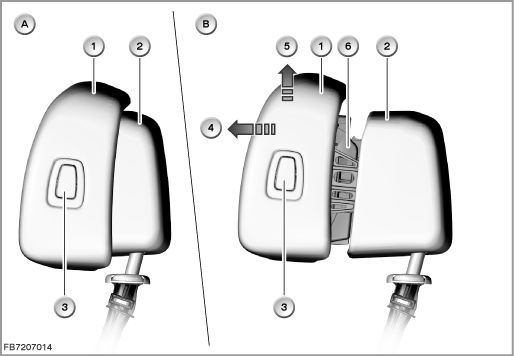
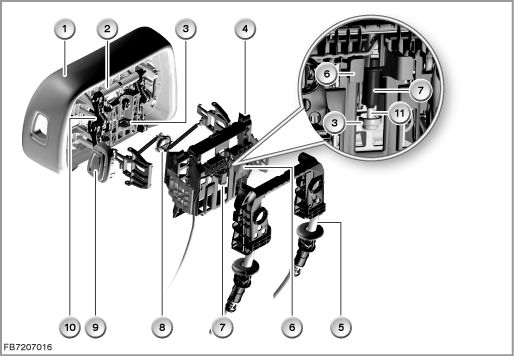
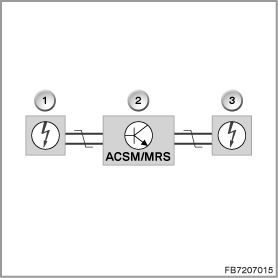

Crash-Active Head Restraint (As of 09/07)
Crash-active head restraint
On triggering, the crash-active head restraint locks the distance between the head restraint and head in order to reduce the load on the cervical vertebrae during a rear-end collision.
(Reason: The distance between the head and head restraint can increase as the result of the individual setting options of the seat.)
Brief description of components
The following components are described:
- Crash-active head restraint
- ACSM or MRS: Crash safety module or multiple restraint system
(ACSM stands for �Advanced Crash Safety Module�, referred to as the "crash safety module".)
- Airbag control lamp
- Crash-active head restraint
The crash-active head restraint is available for the driver's and passenger's seat.
The crash-active head restraint can be recognized in that it is split into two parts.
There are 2 versions of the crash-active head restraint:
- Crash-active head restraint for the comfort seat
The depth adjustment of the head restraint can be set via the backrest-head adjustment.
- Crash-active head restraint for all seats except comfort seat
The button for setting the head restraint (depth adjustment) is installed in the side surface of the front section of the head restraint. It enables the position of the front section of the head restraint to be varied in 3 positions by up to 30 millimetres depending on what the occupant wants.
For the forward depth adjustment, the front section of the head restraint only needs to be pulled (2 lock positions). For the backward depth adjustment, press the button in the front section of the head restraint. This releases the catch.The front section of the head restraint can be pressed backwards.
In the event of a rear-end collision, the front section of the head restraint is moved forwards instantly by spring force by up to 60 millimetres and upwards by up to 40 millimetres (depending on the current depth adjustment). This reduces the distance to the head.

Index Explanation
A Crash-active head restraint (not triggered)
B Crash-active head restraint (triggered)
1 Front section of the head restraint
2 Head restraint support
3 Button for setting the head restraint (depth adjustment)
4 On triggering, max. total path forwards: 60 millimetres
5 On triggering, max. total path upwards: 40 millimetres
6 Mechanical system for setting the head restraint as well as for motion of the head restraint in a triggering sequence
If the crash safety module or MRS control module sends a trigger signal, the crash-active head restraint triggers as follows:
- The priming cap in the pyrotechnic component ignites the propellant charge.
The pyrotechnic component contains the priming cap and propellant charge (designation in the connection scheme: �Inflator assembly, front left active head restraint� and �Inflator assembly, front right active head restraint�).
- The propellant charge drives a pin. The pin presses onto a release plate.
- When the release plate shifts, the tensioned springs are triggered. The spring force moves the front section of the head restraint forwards and upwards.

Index Explanation
1 Front section of the head restraint
2 Springs
3 Release plate
4 Head restraint support
5 Bracket for mounting the head restraint support
6 Bracket for the pyrotechnic component
7 Pyrotechnic component (contains priming cap and propellant charge)
8 Linkage for the headrest adjustment
9 Button for setting the head restraint (depth adjustment)
10 Mechanical system for motion of the head restraint in a triggering sequence
11 Pin (crash-active head restraint triggered)
Note: Deactivation of the crash-active head restraint with shutdown of the passenger airbag
If the optional extra 470 �ISOFIX child seat fixing� or option 5DA �Front passenger's airbag deactivation� is installed, the airbags and crash-active head restraint on the passenger's side can be disabled. The switch is operated using the key integrated in the remote control.
In the switch position �OFF�, the following airbags on the passenger's side are not triggered: Front passenger's airbag and side airbag. The indicator light for passenger airbag deactivation (passenger airbag off light) lights up.
- ACSM or MRS: crash safety module or multiple restraint system
The crash safety module or multiple restraint system has the following tasks:
- Detecting an accident situation that is critical for the occupants
- Activating the necessary restraint systems (selectively depending on the severity of the accident and accident type)
All inflator assemblies, pyrotechnic components and sensors are connected directly to the crash safety module or MRS control module. The crash safety module or MRS control module evaluates the data of the sensors.
In the case of a crash, the crash safety module or MRS control module decides whether it is necessary to trigger the seat belt tensioner and airbags and what airbags need to be triggered.
The crash safety module or MRS control module also triggers the crash-active head restraints.

Index Explanation
1 Crash-active head restraint, front left
(designation in the connection scheme: Inflator assembly, front left active head restraint)
2 Crash safety module (ACSM:Advanced Crash Safety Module) or MRS control module (MRS: multiple restraint system).
3 Crash-active head restraint, front right (designation in the connection scheme: Inflator assembly, front right active head restraint
- Airbag control lamp
The airbag indicator lamp indicates the operability of the crash safety system. The airbag warning lamp in the instrument cluster is activated by the crash safety module or MRS control module via the K-CAN.
System functions
The following safety system functions are described:
- Self test
- Collision detection
- Activating the safety system
- Data storage on activation of the safety system
- Self test
In addition to all the inputs and outputs, the crash safety module or MRS control module also monitors the internal components (self-test). Possible faults are stored in the crash safety module or MRS control module.In the event of a system fault or a fault in a component, the airbag warning lamp lights up.
After switching on the ignition, the crash safety module or MRS control module starts a self-test. During this time, the airbag warning lamp lights up (approx. 3 to 5 seconds). When the safety system is functional, the airbag warning lamp goes out.
- If the instrument cluster receives no CAN message from the Crash Safety Module or MRS control module, the airbag warning lamp lights up.
- The airbag warning light remains on if the crash safety module or MRS control module detects an existing fault or one that has been stored during the self-test or while the vehicle is in motion.
- If a fault is detected in the safety system, the operability of the safety system is partially maintained under the following conditions:
- If a fault is detected in a circuit of the safety system, only the function of the circuit concerned is disabled. The other airbags, seat belt tensioners and crash-active head restraints remain functional.
- In the event of a fault in the circuit of the airbag warning light, the light does not light up in the self-test. With the precondition that no other fault is present, the safety system remains functional without restriction.
- The entire safety system is deactivated if there is an internal fault in the crash safety module or MRS control module or in the power supply.(airbag warning and seat belt warning lamp light up, Check Control symbol in the LC display)
- Collision detection
The direction and severity of an impact is detected by the acceleration sensors in the crash safety module or MRS control module and by external acceleration sensors. The crash safety module or MRS control module process all the acceleration data.
- Activating the safety system
Comprehensive tests are used to set trigger thresholds for all possible types of accident.
This results in different trigger thresholds for activation of the various restraint systems (e.g. airbags, seat belt tensioners, crash-active head restraint).
The restraint systems are triggered only when 2 independent sensors detect the corresponding threshold.
For example, a rear-end collision is detected by the longitudinal acceleration sensor in the airbag sensor in the driver's side B-pillar and by the longitudinal acceleration sensor in the crash safety module or MRS control module. The crash safety module or MRS control module calculates the direction of the impact and the collision severity from the data sent by the sensors. Depending on the severity of the accident, e.g. the crash-active head restraint and the safety battery terminal are triggered and the electric fuel pump is switched off.
- Data storage on activation of the safety system
When the restraint systems trigger, certain data are written to a read only memory in the crash safety module or MRS control module.The data is relevant to accident research (no access for service).
Notes for Service department
General information
If the crash-active head restraint was triggered, the pyrotechnic component must be replaced (comply with the repair instructions. Designation of the pyrotechnic component in the electronic parts catalogue: gas cartridge).
Only after replacement of the pyrotechnic component can the springs in the head restraint be tensioned again. This means: After activating the crash-active head restraint, the front section of the head restraint can no longer be locked in place. The front section of the head restraint is always pressed forwards by the spring force.
After replacing the pyrotechnic component, clear the fault memory.
No liability can be accepted for printing or other faults. Subject to changes of a technical nature